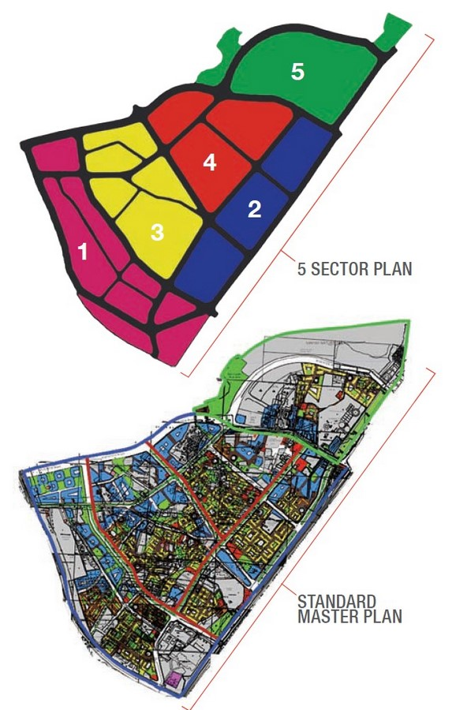

Organisation
Dharavi is Mumbai's area in India and it is a spontaneous neighborhood. It is the second largest slums in Asia and is often reffered to have a district due to its size and population. Dharavi is organized into several different sections also called "villages". Each villages have is own economy and unique character. Theses villages are named after various communities that reside in theses villages. For exemples they are Kumbharwada (Pottery Village), Matunga Labour Camp (tannery vallage) and Muslim nagar (Muslim Village). Dharavi has a great diversity of population. In fact there people from all India working and living in the neighborhood. This "Mini-City" is know for its informal economy. A lot of residents are engages in small-scale manufacturing and recycling industries. The area of Dharavi is also home to a lot of schools, health clinics and community centers. Theses places are run by both government and non-governmental organizations. Dharavi have a strange physical layout. This one is dense and cramped, with narrow alleyways and multi-story buildings packed closely together. Dharavi is a resilient and very dynamic community. The neighborhood continues to attract many and many people from all over India who are looking for a better life in the city.
